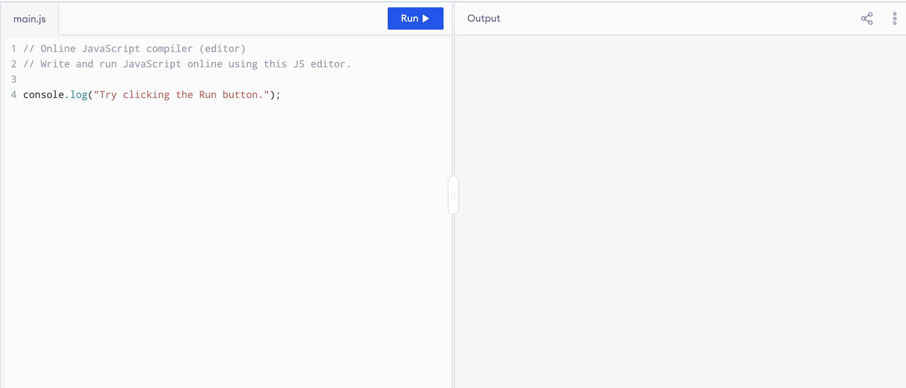

Fondamenti Teorici e Programmazione
Freccia destra o spazio per avanzare, freccia sinistra per tornare indietro — oppure i pulsanti "Indietro" e "Avanti" in fondo alla pagina.
Argomenti:
console.log e prompt)| Esercizio | Argomento |
|---|---|
| Esercizio 1 | Tipi di dato |
| Esercizio 2.1 | Input e output |
| Esercizio 2.2 | Stringhe |
| Esercizio 3 | Variabili |
| Esercizio 4 | Operatori aritmetici |
| Esercizio 5 | Operatori aritmetici |
| Esercizio 6 | Casting |
| Esercizio 7 | Operatori aritmetici |
| Esercizio 8 | Operatori aritmetici |
| Esercizio 9 | Casting |
| Esercizio 10 | Funzioni matematiche |
| Esercizio 11 | Operatori aritmetici |
Importante: confrontate il ragionamento, non solo il codice. Esistono più soluzioni corrette, se la vostra non corrisponde alla mia non è detto che sia sbagliata.

La pagina è fatta di tre componenti, ognuno con un compito preciso:
| Componente | Dove | Cosa fa |
|---|---|---|
| Editor | pannello di sinistra | qui scrivete il programma (testo, come in un blocco note) |
| Interprete | si attiva col pulsante Run | legge il programma e lo esegue istruzione per istruzione |
| Console | pannello di destra | qui compaiono i risultati: output ed errori |
Il programma non è "fatto" di nessuno dei tre: è solo testo.
L'editor serve a scrivere il codice sorgente, l'interprete lo fa vivere, la console mostra cosa è successo.
Ogni Run riparte da zero: nulla si conserva da una esecuzione all'altra.
Scrivete questo nell'editor e premete Run:
console.log("Ciao, mondo!");Nella console compare:
Ciao, mondo!Attenzione al nome: console.log(...) è l'istruzione con cui il programma dice all'interprete "scrivi questo nella console". Non è la console in sé, ma il modo di usarla.
Provate ora a rompere il programma: togliete una parentesi e premete Run. Cosa compare nella console? L'interprete non riesce a leggere il testo e ve lo dice: leggete sempre il messaggio.
console.log("Ciao, mondo!"; // manca la parentesi chiusaNella console compare un messaggio di errore, simile a questo:
console.log("Ciao, mondo!";
^^^^^^^^^^^^^^
SyntaxError: missing ) after argument listCome leggerlo:
SyntaxError è il tipo di errore: l'interprete non ha capito come è scritto il programma (errore di sintassi);missing ) after argument list è la spiegazione: manca una ) dopo gli argomenti di console.log;^^^^ indica dove l'interprete si è accorto del problema (spesso è il punto dopo quello da correggere);Ogni valore che Javascript può manipolare ha un tipo.
I quattro tipi fondamentali :
| Tipo | Esempi | Note |
|---|---|---|
number | 42, 3.14, -7 | numeri interi e decimali |
string | "ciao", "42", "" | testo tra apici |
boolean | true, false | valori che rappresentano condizioni di verità |
undefined | undefined | "nessun valore assegnato" |
console.log(42); // number
console.log("42"); // string: le virgolette cambiano il tipo!
console.log(true); // booleanAritmetici: operano su valori di tipo number:
| Operatore | Significato | Esempio |
|---|---|---|
+ - | somma, differenza | 7 - 2 → 5 |
* / | prodotto, divisione reale | 7 / 2 → 3.5 |
% | resto | 7 % 2 → 1 |
** | potenza | 2 ** 3 → 8 |
Precedenza: prima **, poi * / %, poi + -. Le parentesi comandano sempre (come a scuola).
string| Operatore | Significato | Esempio |
|---|---|---|
+ | concatenazione | "cia"+"o" → "ciao" |
Attenzione! Il tipo decide cosa fa l'operatore +: "3" + "4" è "34", ma 3 + 4 è 7.
Possiamo convertire un tipo in un altro; Ad esempio, per convertire una stringa in numero: Number("42"). Se non è convertibile il risultato è NaN (Not a Number).
Una variabile è un nome a cui è associato un valore.
let eta = 23; // dichiara e assegna
eta = eta + 1;
const PI_GRECO = 3.14; // const: non si può riassegnarelet per valori che cambiano, const per valori che restano fissi;= non significa "uguale a": significa "valuta l'espressione a destra, assegnala al nome a sinistra";Output: console.log(...) stampa i suoi argomenti separati da uno spazio.
console.log("Somma:", 3 + 4); // Somma: 7Input: prompt(<string>) mostra una stringa e restituisce sempre una stringa.
let eta_input = prompt("Inserisci la tua età:"); // "20" (stringa!)
let eta = Number(eta_input); // 20 (number)
console.log(eta);prompt(...) ferma l'esecuzione e chiede un valore all'utente;eta_input;eta_input viene trasformato in intero e assegnato ad una seconda variabile etaconsole.log(...) lo stampa nella console.In generale è bene tenere a mente uno schema generale: leggo l'input → elaboro e calcolo → stampo.
Scrivere un programma con tre istruzioni. La prima che visualizzi un numero, la seconda che visualizzi una stringa, la terza che visualizzi un valore booleano.
Note:
// un numero, una stringa, un booleano
console.log(42);
console.log("ciao");
console.log(true);Ogni istruzione termina con ;. Il tipo del valore dipende da come lo scrivo: "42" sarebbe una stringa.
I valori possono essere anche il risultato di espressioni.
console.log(3 + 5); // number: l'espressione vale 8
console.log("ciao, " + "mondo!"); // string: concatenazione, vale "ciao, mondo!"
console.log(false); // booleanConta il tipo del valore che l'espressione produce, non come è scritta: 3 + 5 è un number, "3" + "5" sarebbe la stringa "35".
Scrivete un programma che legge il vostro nome dall'input e poi stampa la stringa Ciao <nome>! in output.
Ad esempio, se il nome è Giulia, stamperà la stringa "Ciao Giulia!"
let nome = prompt("Come ti chiami?");
console.log("Ciao " + nome + "!");prompt restituisce una stringa: qui va bene così, non serve convertire. In alternativa: console.log("Ciao", nome + "!").
Modificare l'esercizio precedente leggendo anche il cognome e stampate Ciao, Nome Cognome!.
Esempio:
Nome: Ada
Cognome: Lovelace
Ciao, Ada Lovelace!let nome = prompt("Nome:");
let cognome = prompt("Cognome:");
console.log("Ciao, " + nome + " " + cognome + "!");Attenzione allo spazio tra nome e cognome: va concatenato come stringa " ".
Scrivere un programma che visualizzi su 4 righe separate i propri dati anagrafici: nome, cognome, luogo di nascita e data di nascita.
L'output deve essere di questo tipo (con i vostri dati):
Nome: Mario
Cognome: Rossi
Luogo di nascita: Bologna
Data di nascita: 01/01/1990let nome = "Mario"; // un dato per variabile
let cognome = "Rossi";
let luogo = "Bologna";
let data = "01/01/1990"; // la data è una stringa, non un numero
console.log("Nome: " + nome);
console.log("Cognome: " + cognome);
console.log("Luogo di nascita: " + luogo);
console.log("Data di nascita: " + data);Con + unisco etichetta e valore. Alternativa: console.log("Nome:", nome), che inserisce lo spazio da solo.
Scrivere un programma che visualizzi il cubo del numero reale inserito in input dall’utente. Si aggiungano tutti i commenti ritenuti necessari.
let x_input = prompt("Inserisci un numero:");
let x = Number(x_input); // prompt dà una stringa: converto
let cubo = x ** 3; // potenza
console.log("Il cubo di", x, "è", cubo);Funziona anche con decimali e negativi. Alternativa: x * x * x.
Scrivere un programma che calcoli e visualizzi il resto che si ottiene dividendo il proprio numero di matricola per 2. Si aggiungano poi tutti i commenti ritenuti necessari.
let matricola_input = prompt("Numero di matricola:");
let matricola = Number(matricola_input);
let resto = matricola % 2; // % restituisce il resto della divisione
console.log("Il resto di", matricola, "diviso 2 è", resto);Il resto è 0 se la matricola è pari, 1 se è dispari.
Creare un programma JS che legge l'età dell'utente e stampa due righe:
Età: 20
Tra un anno avrai 21 anni
Un anno fa avevi 19 annilet eta_input = prompt("Età:");
let eta = Number(eta_input);
console.log("Età:", eta);
console.log("Tra un anno avrai", eta + 1, "anni");
console.log("Un anno fa avevi", eta - 1, "anni");Attenzione all'errore classico. Con eta = 20, questa riga:
console.log("Tra un anno avrai " + eta + 1); // SBAGLIATO: stampa "Tra un anno avrai 201"non stampa 21. L'interprete valuta i + da sinistra a destra, uno alla volta:
"Tra un anno avrai " + eta → una stringa e un numero: + concatena, quindi 20 diventa testo e il risultato è la stringa "Tra un anno avrai 20";"Tra un anno avrai 20" + 1 → di nuovo una stringa e un numero: concatena ancora, e il risultato è "Tra un anno avrai 201".Il 1 non viene mai sommato a 20: al secondo passo il valore a sinistra è già una stringa. Due modi per ottenere 21:
console.log("Tra un anno avrai " + (eta + 1)); // le parentesi si calcolano per prime: 20 + 1 = 21, poi si concatena
console.log("Tra un anno avrai", eta + 1); // la virgola separa gli argomenti: eta + 1 è un calcolo a séScrivere un programma che, leggendo il valore del raggio di un cerchio in input, calcoli e visualizzi il valore del perimetro e dell’area del cerchio. Si aggiungano al programma tutti i commenti ritenuti necessari.
Promemoria: dato il raggio
r, perimetro =2 · π · r, area =π · r².
const PI_GRECO = 3.14159; // costante: non cambia
let r_input = prompt("Raggio:");
let r = Number(r_input);
let perimetro = 2 * PI_GRECO * r;
let area = PI_GRECO * r ** 2; // ** ha precedenza su *
console.log("Perimetro:", perimetro);
console.log("Area:", area);Si può usare Math.PI al posto della costante. Senza parentesi r ** 2 viene calcolato per primo, come ci aspettiamo.
Leggete una temperatura in gradi Celsius e stampate l'equivalente in Fahrenheit e in Kelvin.
Formule: F = C · 9/5 + 32 e K = C + 273.15.
Esempio con 23:
23 °C = 73.4 °F = 296.15 Klet c_input = prompt("Temperatura in °C:");
let c = Number(c_input);
let f = c * 9 / 5 + 32;
let k = c + 273.15;
console.log(c, "°C =", f, "°F =", k, "K");Con 23 stampa 23 °C = 73.4 °F = 296.15 K. Provate anche 0 e un valore negativo.
Leggete un nome e un anno di nascita dall'input, poi stampate una frase come:
Ciao Anna, potresti avere 20 o 21 anni(Non conosciamo la data di nascita completa, quindi la differenza tra anni vale solo se il compleanno è già passato; altrimenti l'età è di uno in meno.)
const ANNO_CORRENTE = 2026;
let nome = prompt("Nome:");
let anno_input = prompt("Anno di nascita:");
let anno = Number(anno_input);
let eta_max = ANNO_CORRENTE - anno; // compleanno già passato
let eta_min = eta_max - 1; // compleanno non ancora passato
console.log("Ciao " + nome + ", potresti avere", eta_min, "o", eta_max, "anni");Non conoscendo il giorno di nascita, l'età è uno di due valori consecutivi.
Creare un programma JS che estragga 3 numeri naturali casuali compresi tra 1 e 100 e li mostri a schermo.
// Math.random() dà un decimale in [0, 1)
let a = Math.floor(Math.random() * 100) + 1; // intero tra 1 e 100
let b = Math.floor(Math.random() * 100) + 1;
let c = Math.floor(Math.random() * 100) + 1;
console.log(a, b, c);Math.random() * 100 è in [0, 100): con Math.floor otteniamo 0–99, il + 1 porta l'intervallo a 1–100.
Scrivere un programma che stampi il valore delle unità, decine e centinaia che compongono un numero naturale a tre cifre (scelto a piacere in input). Si utilizzino gli operatori visti nel Capitolo 1. Si aggiungano al programma tutti i commenti ritenuti necessari.
Suggerimento:
Si parta da questa considerazione per poi procedere.
Se si considera ad esempio il numero 234, il numero di unità (cioè 4) si può ottenere dividendo il numero per 10 e considerando il resto (infatti, 234 diviso 10 fa 23 con resto 4).
let n_input = prompt("Numero a tre cifre:");
let n = Number(n_input); // es. 234
let unita = n % 10; // 234 % 10 = 4
let decine = Math.floor(n / 10) % 10; // 23.4 -> 23, poi 23 % 10 = 3
let centinaia = Math.floor(n / 100); // 2.34 -> 2
console.log("Unità:", unita);
console.log("Decine:", decine);
console.log("Centinaia:", centinaia);/ è divisione reale (234 / 10 è 23.4), quindi serve Math.floor per scartare i decimali.
console.log=("risultato: "); // SBAGLIATOQuel = è un assegnamento: stiamo dicendo "console.log ora vale la stringa "risultato: "". Non stampa niente, e non dà errore subito.
Il problema si vede alla prossima istruzione che usa console.log:
TypeError: console.log is not a functionPer chiamare una funzione si scrivono le parentesi subito dopo il nome, senza =:
console.log("risultato: "); // GIUSTOprompt?anni = prompt("22"); // SBAGLIATOLa stringa dentro prompt(...) è il messaggio mostrato all'utente, non la risposta. Il valore (22) lo digita chi usa il programma, e prompt lo restituisce.
let anni_input = prompt("Quanti anni hai?"); // mostra la domanda, restituisce la risposta (stringa)
let anni = Number(anni_input); // convertiamo: anni è un numberNotate anche let: senza, anni non è dichiarata. Dichiarate sempre le variabili.
anni = prompt("inserisci anni");
anni_num = Number(anni);
console.log("L'anno prossimo avrai", anni+1, "anni"); // SBAGLIATOCon input 22 stampa:
L'anno prossimo avrai 221 anniLa conversione è stata fatta, ma nel calcolo c'è ancora anni, che è una stringa: "22" + 1 è la concatenazione "221". Convertire in anni_num non cambia anni: sono due variabili diverse.
let anni = prompt("inserisci anni");
let anni_num = Number(anni);
console.log("L'anno prossimo avrai", anni_num + 1, "anni"); // GIUSTO: 23Non contano (tra un'istruzione e l'altra, attorno a =, +, (, a capo, rientri):
let x=5 ;
let y = x+1; // stesso significato di let y = x + 1;L'indentazione serve solo a leggere meglio il codice.
Anche le righe vuote servono solo alla lettura: ad esempio per separare i blocchi logici del programma (input, elaborazione, output).
let anni_input = prompt("Quanti anni hai?"); // 1. prendo i dati in input
let anni = Number(anni_input);
let prossimo = anni + 1; // 2. li trasformo
console.log("L'anno prossimo avrai", prossimo); // 3. stampo il risultatoContano:
"Ciao " e "Ciao" sono diverse, e "Ciao " + "mondo" stampa Ciao mondo, mentre "Ciao" + "mondo" stampa Ciaomondolet mia variabile = 5; dà SyntaxError; si scrive mia_variabile. Anche let x e letx sono cose diverseNumber(" 22 ") vale 22 (gli spazi ai lati si ignorano), ma Number("2 2") vale NaN, e Number("") (o solo spazi) vale 0console.log("a", "b") stampa a b: tra gli argomenti separati da virgola lo spazio lo mette lui.